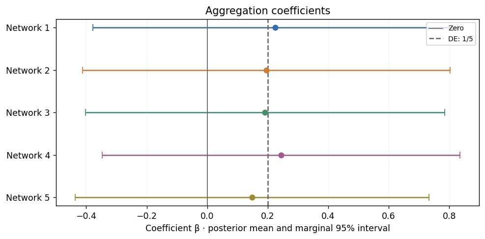
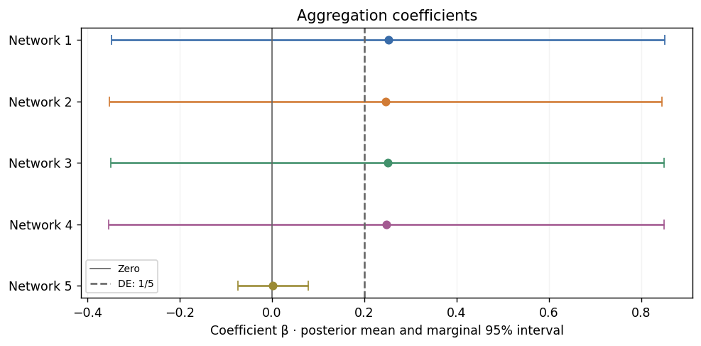
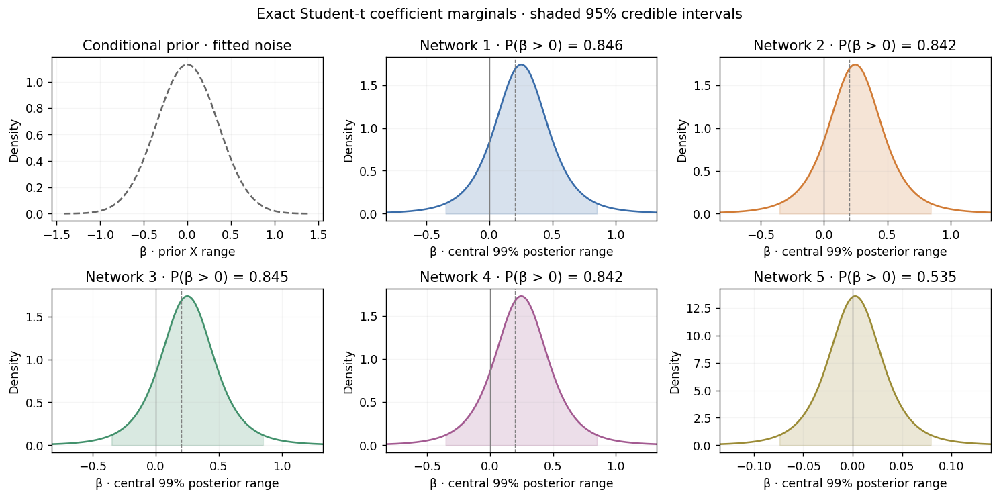
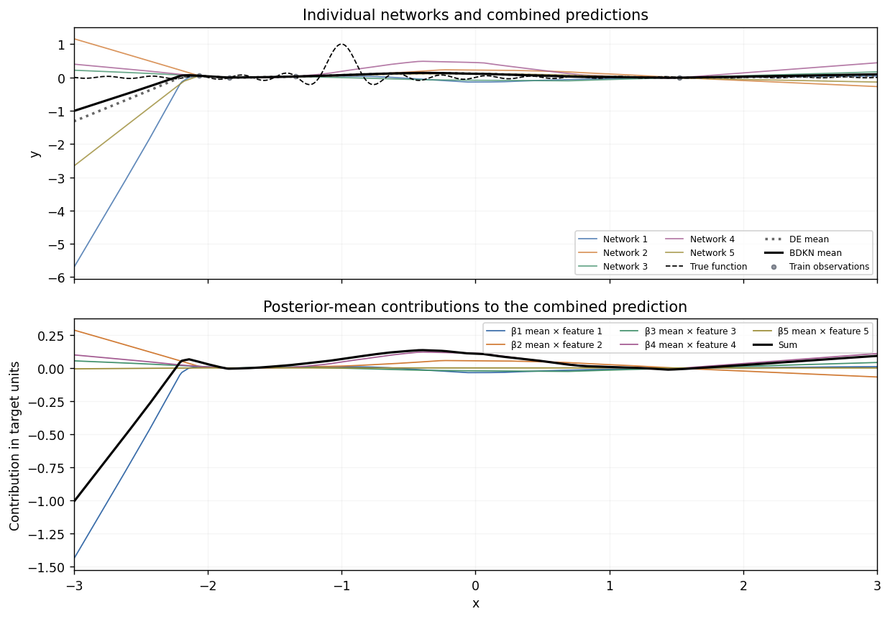
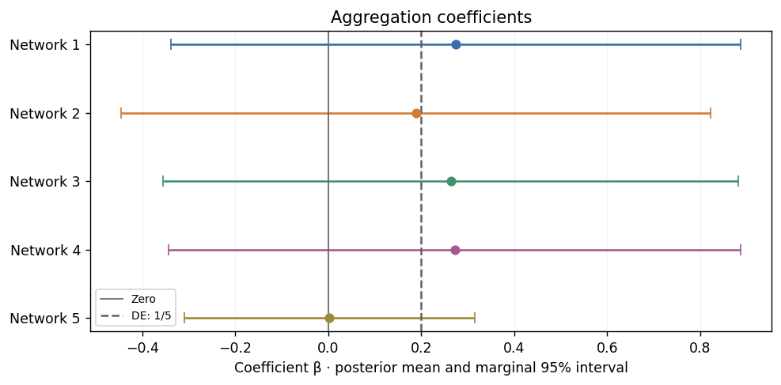
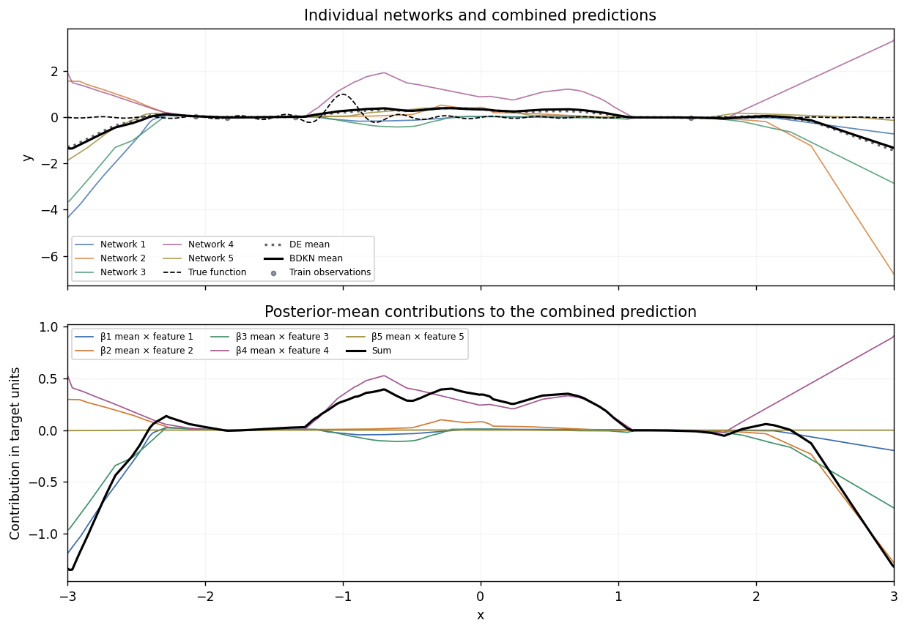
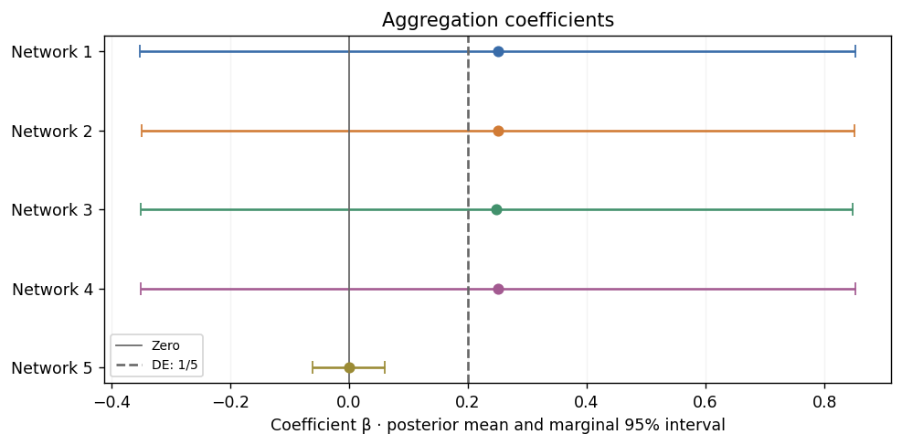
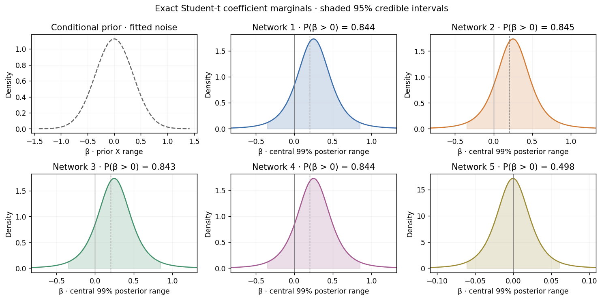
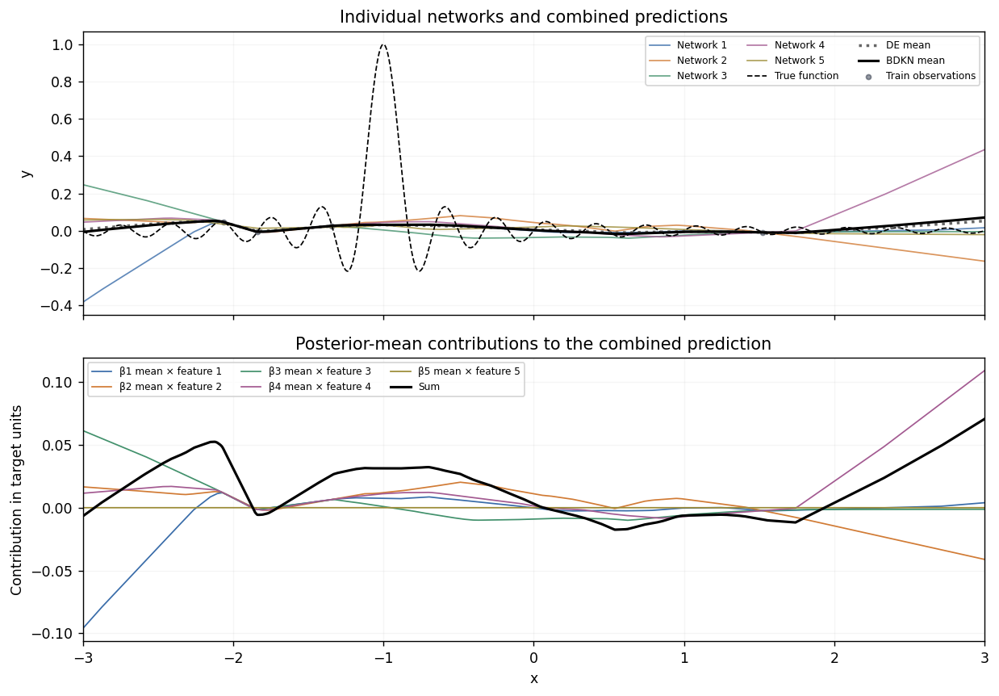

Regression comparison
Download resultsAggregation weights
Coefficients can be negative and need not sum to one. Intervals describe coefficient uncertainty; the dashed reference is DE’s fixed 1/H weight.
BDKN


Each density panel uses its own X range for readability; coefficient intervals above share a common axis. Prior reference conditions on fitted noise. Contribution shares use held-out inputs; test targets are used only for scoring.
| Network | β mean | 95% low | 95% high | P(β > 0) | Contribution share | Test RMSE | Test NLL |
|---|---|---|---|---|---|---|---|
| 1 | 0.22455 | -0.37810 | 0.82721 | 0.82033 | 0.23201 | 0.18210 | 804.83344 |
| 2 | 0.19524 | -0.41183 | 0.80230 | 0.78882 | 0.25037 | 0.19040 | 1165.62672 |
| 3 | 0.19074 | -0.40289 | 0.78436 | 0.78862 | 0.11231 | 0.18708 | 295.28098 |
| 4 | 0.24410 | -0.34753 | 0.83573 | 0.84207 | 0.22744 | 0.17958 | 1034.70615 |
| 5 | 0.14857 | -0.43568 | 0.73282 | 0.74044 | 0.17788 | 0.18625 | 714.88349 |
Functional repulsion · BDKN



Each density panel uses its own X range for readability; coefficient intervals above share a common axis. Prior reference conditions on fitted noise. Contribution shares use held-out inputs; test targets are used only for scoring.
| Network | β mean | 95% low | 95% high | P(β > 0) | Contribution share | Test RMSE | Test NLL |
|---|---|---|---|---|---|---|---|
| 1 | 0.25230 | -0.34665 | 0.85125 | 0.84644 | 0.47589 | 1.19201 | 305488.80735 |
| 2 | 0.24662 | -0.35145 | 0.84469 | 0.84195 | 0.21525 | 0.33504 | 1552.82130 |
| 3 | 0.25036 | -0.34864 | 0.84936 | 0.84480 | 0.08052 | 0.19608 | 607.99203 |
| 4 | 0.24856 | -0.35287 | 0.84999 | 0.84242 | 0.22556 | 0.28591 | 5872.82230 |
| 5 | 0.00256 | -0.07402 | 0.07914 | 0.53475 | 0.00277 | 0.58426 | 5383.97793 |
Weight repulsion · BDKN


Each density panel uses its own X range for readability; coefficient intervals above share a common axis. Prior reference conditions on fitted noise. Contribution shares use held-out inputs; test targets are used only for scoring.
| Network | β mean | 95% low | 95% high | P(β > 0) | Contribution share | Test RMSE | Test NLL |
|---|---|---|---|---|---|---|---|
| 1 | 0.27382 | -0.33899 | 0.88662 | 0.85872 | 0.14539 | 0.82399 | 55350.99452 |
| 2 | 0.18859 | -0.44467 | 0.82186 | 0.77261 | 0.20980 | 1.42991 | 69544.07017 |
| 3 | 0.26346 | -0.35484 | 0.88175 | 0.84885 | 0.22386 | 0.94230 | 139648.54624 |
| 4 | 0.27199 | -0.34314 | 0.88711 | 0.85656 | 0.42012 | 1.14759 | 160973.81871 |
| 5 | 0.00273 | -0.30901 | 0.31446 | 0.50910 | 0.00083 | 0.36724 | 5855.65550 |
First-order repulsion · BDKN



Each density panel uses its own X range for readability; coefficient intervals above share a common axis. Prior reference conditions on fitted noise. Contribution shares use held-out inputs; test targets are used only for scoring.
| Network | β mean | 95% low | 95% high | P(β > 0) | Contribution share | Test RMSE | Test NLL |
|---|---|---|---|---|---|---|---|
| 1 | 0.25035 | -0.35147 | 0.85216 | 0.84380 | 0.17477 | 0.18563 | 1261.58406 |
| 2 | 0.25117 | -0.34844 | 0.85079 | 0.84526 | 0.26003 | 0.17751 | 273.42570 |
| 3 | 0.24831 | -0.35120 | 0.84782 | 0.84289 | 0.19563 | 0.18640 | 324.49769 |
| 4 | 0.25078 | -0.35089 | 0.85244 | 0.84421 | 0.36950 | 0.20511 | 2289.63388 |
| 5 | -0.00014 | -0.06084 | 0.06056 | 0.49759 | 0.00007 | 0.17229 | 73.06236 |